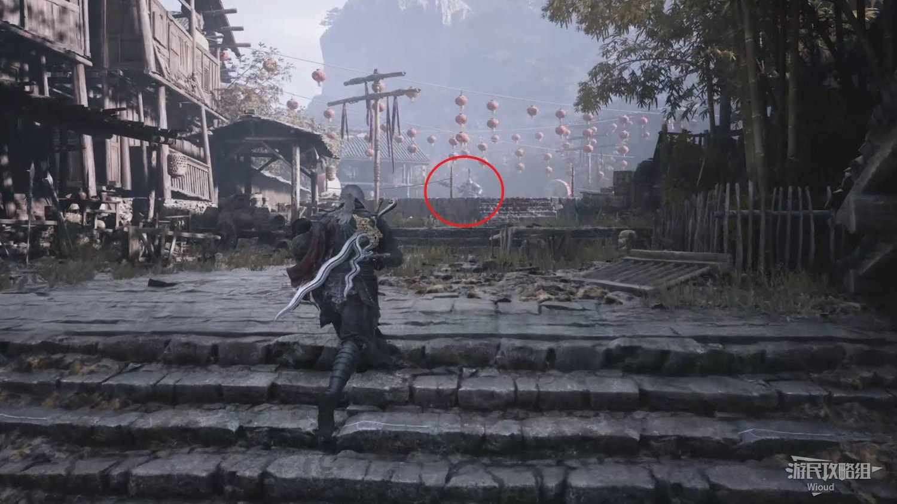

地圖錯過不再
進入方式
陸家村起點附近・正道大營外門
在陸家村起點附近可以看到通往大營的大門，但需要正道大營外門鑰匙。鑰匙在龐鎮擊敗骨婉約後，跟著她跳井，在井底記憶之花旁取得。
錯過條件沒有鑰匙就進不去；骨婉約是必經頭目，正常不會漏。
進入正道大營

正道大營是中期最短、但錯過最痛的一章。四朵記憶之花有明確的時限，還有一個「不要在鴿舍樓頂殺頭目」的反直覺提示。主線推進後，部分點位會永久關閉。
在鴿舍樓頂遇到頭目時，直接走，不要在那裡擊殺。否則會少一朵記憶之花與飾品【同心雙魚佩】，而且無法補救。


圖片為攻略實機畫面、所在區域實景或頭目名刺；部分頭目沒有適合的單獨截圖，以名刺卡呈現。
實機畫面
 實機畫面・會錯過
實機畫面
實機畫面・會錯過
實機畫面
完成度只存在你的瀏覽器；換裝置不會同步。